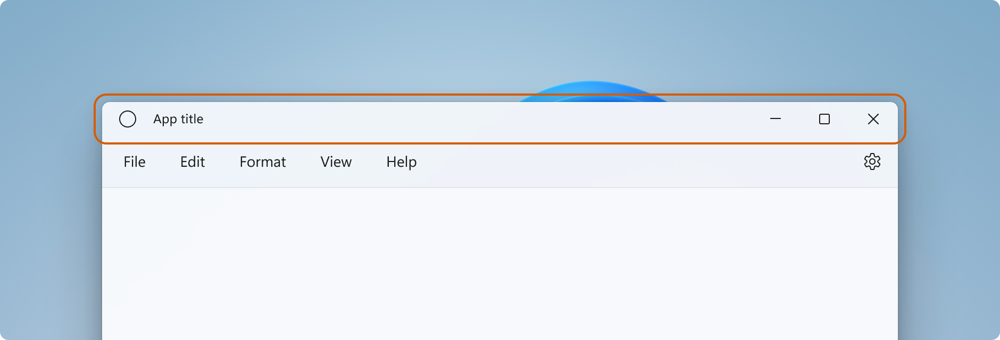
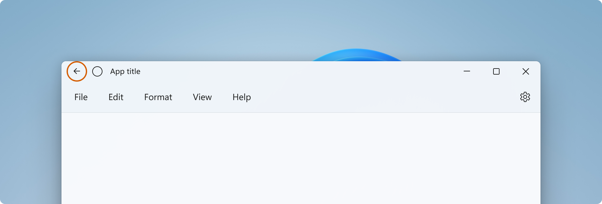
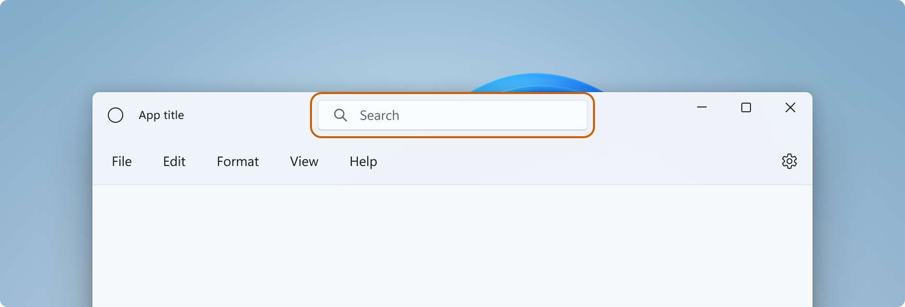
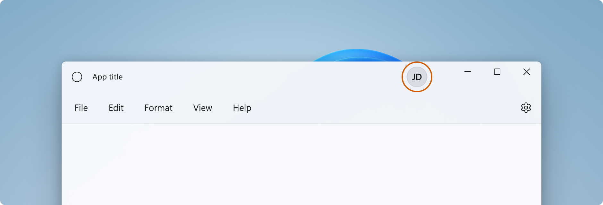
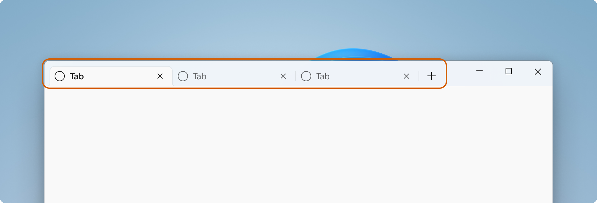

Title bar design
The title bar sits at the top of an app on the base layer. Its main purpose is to allow users to be able to identify the app via its title, move the app window, and minimize, maximize, or close the app.

Standard design
This section describes the design recommendations and behaviors of the parts of a standard title bar.
Bar
Design
- The standard title bar has a height of 32px.
- The title bar's default background is Mica, however we recommend that title bars blend with the rest of the window if possible.
- Title bars help users differentiate when a window is active and inactive. All title bar elements should be semi-transparent when the window is inactive.
- The title bar colors should adjust when users switch to high contrast themes, or between light and dark modes.
- For high contrast themes, apps should use the
SystemColorsclass for determining proper UI element coloring to facilitate a superior high-contrast experience.
- For high contrast themes, apps should use the
Behavior
- The title bar plays a vital role in repositioning and resizing a window. All empty space in the title bar or space taken up by non-interactive elements like the window title should be draggable.
- A right-click/press-and-hold on any part of the title bar that does not have an interactive element should show the system window menu.
- A double-click/tap should toggle between maximizing the window and restoring the window.
Icon
Design
- The size of the window icon is 16px by 16px.
- Place the icon 16px from the left-most border in LTR, or right-most border in RTL.
- If the back button is present, place the window icon 16px to the right of the back button.
- The window icon should be vertically centered in the title bar. For example, When the title bar height is 32px, the top and bottom margins are 8px.
Behavior
- A single-click/tap on the icon should show system window menu.
- A double-click/tap should close the window.
Title
Design
- Place the window title 16px from the window icon or back button.
- If neither an icon nor back button are present, place the window title 16px from the left-most border in LTR, or right-most border in RTL.
- The window title should use the Segoe UI Variable (if available) or Segoe UI font.
- The window title should use caption style text (see XAML type ramp).
- The window title can be truncated, and an ellipsis added if the window width is smaller than the length of the title bar elements. The icon and caption buttons (min, max and close) should always be fully visible.
Behavior
- A right-click/press-and-hold on the icon should show the system window menu.
- A double-click/tap should toggle between maximizing the window and restoring the window.
- The window title and other textual elements in the title bar should respond to text-scaling. This might require that the title bar grows in height.
Caption controls (minimize, maximize, restore, close)
If you create your own caption buttons for your app, follow these guidelines to match the system caption buttons.
Design
- Use these icons for the buttons:
- Minimize icon: E921 ChromeMinimize
- Maximize icon: E922 ChromeMaximize
- Restore icon: E923 ChromeRestore
- Close icon: E8BB ChromeClose
- The icons for the maximize and restore buttons have rounded corners.
- Caption buttons have full bleed backplates.
- Caption buttons respond to rest, on hover, on pressed, active, and inactive states.
Additional design patterns
Back button
Design
The recommended back button icon is: E830 ChromeBack
- If a back button is present, it should be placed to the left of the app title or icon/title combination (in LTR).
- The back button responds to rest, on hover, on pressed, active, and inactive states.
- The back button should be 16px by 16px and vertically centered in the title bar. The button should have a full bleed backplate.
- The back button should be 16px from the left-most border in LTR, or right-most border in RTL, and 16px from the next element to the left or right of it.

Search
Design
If global search functionality is present, a searchbox should be added to the title bar, centered to the window. Increase the size of the title bar to 48px when you include a searchbox.

The search box needs to be responsive to react to window size changes.
People
If account representation is present, the person-picture control should be placed to the left of the caption controls. Increase the size of the title bar to 48px when you include a person-picture.

Tabs
If you use tabs as the main element of your app, use the title bar space and keep caption controls anchored to the right.
